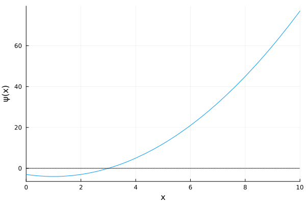
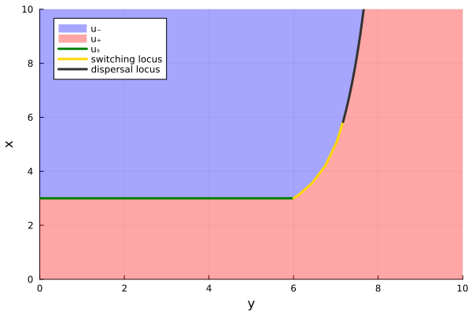
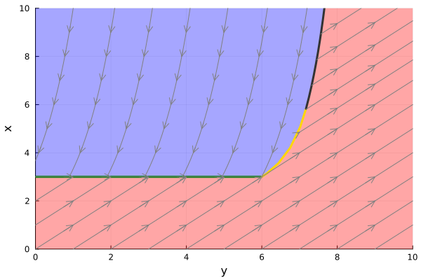
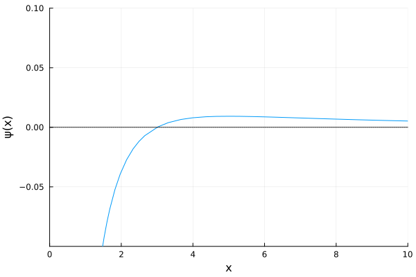
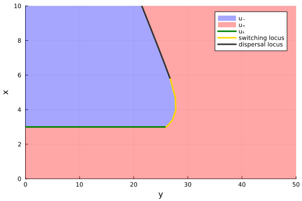
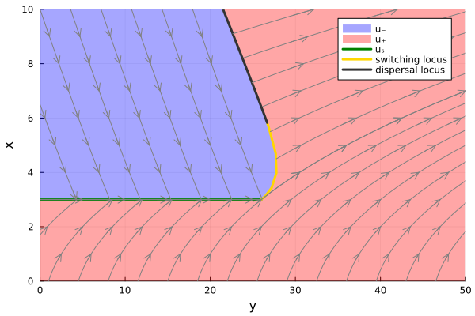

Basic usage & Examples
First of all, one needs to import the pacakge Filtration.jl.
using FiltrationDescription of membrane filtration system
For now, we focus on filtration process, such as membrane filtration systems. During filtration, the difference of pressure between the two side of the membrane allows the water to be filtered. However, some deposit adhere to the membrane which deteriorates its permformances. A method remove this fouling is to reverse the flow of water, which therefore restore the filtration system's efficiency. Such process is shematize throught the following illustration.

The goal now is to briefly describe the modelling of a membrane filtration probess, in order to introcure two example of problem which can be handle with Filtration.jl package.
The permeate flux $J~(\mathrm m. \mathrm s^{-1})$ corresponds to the permeate volume $v~(\mathrm m^3)$ flow per membrane area $A~(\mathrm m^2)$ and is related to the total resistance $R~(\mathrm m^{-1})$ of the membrane according to the Darcy's law
\[ J = \frac{\dot v}{A} = \frac{\Delta p}{\mu R}\]
where $\Delta p~(\mathrm{Pa})$ corresponds to the trans-membrane pressure and $\mu~(\mathrm{Pa}.\mathrm s)$ is the permeate viscosity. The total resistance of the membrane corresponds to the sum between the the intrinsic resistance $R_0~(\mathrm m^{-1})$ and the residual cake resistance $R_c~(\mathrm m^{-1})$ thanks to the "resistances-in-series" concept
\[ R = R_0 + R_c. \]
The pump consumes an energy $e~(\mathrm W.\mathrm h)$ flow, whose variation is proportional to the hydraulic power $P_h~(\mathrm W)$, the later being the product of the permeate flow $J$ by the trans-membrane pressure $\Delta p$
\[ \dot e = \frac{J\Delta p}{\eta},\]
where $\eta$ is the efficiency parameter of the pump.
The dynamic of the resistance $R_c$ rely on complex phenomena, but an efficient simple formulation is given by the following :
- In filtration phases (when $u = +1$), this resistance variation is proportional to the flux $J$ and the total suspended solids concentration $C~(\mathrm{Kg}.\mathrm m^{-3})$
\[ \dot R_c = J \beta C \quad \text{when} \quad u = +1,\]
where $\beta~(\mathrm m.\mathrm{Kg}^{-1})$ is a parameter that describes the resistance of the cake layer.
- In backwash phases (when $u = -1$), this resistance variation is proportional to the flux $J$ and the resistance cake layer $R_c$
\[ \dot R_c = J \omega R_c \quad \text{when} \quad u = -1,\]
where $\omega~(\mathrm m^{-1})$ models the detachment resistance of fooling.
Min Energy case
Let us assume that the flux $J$ is constant during filtration ($J = J_f > 0$) and backwash ($J = -J_b < 0$) phases. The goal is to minimize the total power used to product a targeted permeate volume $v_f$ at a free final time $t_f$. using equations given previously, this problem can be written as (OCP) when the dynamics of cost and states are given in filtration and backwash modes by
\[u = +1 : \left\{ \begin{array}{rl} \dot e & \hspace{-0.75em}= l_p(R_c) = \frac{J_f^2 \mu}{\eta} (R_0 + R_c), \\[0.5em] \dot R_c & \hspace{-0.75em}= f_p(R_c) = J_f \beta C, \\[0.5em] \dot v & \hspace{-0.75em}= g_p(R_c) = J_f A, \end{array} \right. \quad \text{and} \quad u = -1 : \left\{ \begin{array}{rl} \dot e & \hspace{-0.75em}= l_r(R_c) = \frac{J_b^2 \mu}{\eta} (R_0 + R_c), \\[0.5em] \dot R_c & \hspace{-0.75em}= f_r(R_c) = -J_b \omega R_c, \\[0.5em] \dot v & \hspace{-0.75em}= g_r(R_c) = - J_b A. \end{array} \right.\]
Definition of the problem
First of all, let's define the input function and check the number of root of the $\psi$ function, and their approximative value, thanks to the check_root function. To understand the importance of the $\psi$ function and its definition, please refer to Dutto et al., 2026
Jf = 1.; Jb = 1.; μ = 1.; η = 1.; R₀ = 1.; β = 1.; C = 1.; ω = 1.; A = 1.;
θ = [Jf, Jb, μ, η, R₀, β, C, ω, A] # parameters
# Production functions # When u = +1
lp(x,θ) = θ[1]^2*θ[3]*(θ[5]+x)/θ[4] # Dynamic of e
fp(x,θ) = θ[1]*θ[6]*θ[7] # Dynamic of Rc
gp(x,θ) = θ[1]*θ[9] # Dynamic of v
# Regeneration functions # When u = -1
lr(x,θ) = θ[2]^2*θ[3]*(θ[5]+x)/θ[4] # Dynamic of e
fr(x,θ) = -θ[2]*θ[8]*x # Dynamic of Rc
gr(x,θ) = -θ[2]*θ[9] # Dynamic of v
plt = check_root(lp, lr, fp, fr, gp, gr, θ, :min)
plot!(x -> 0, c = :black, ls = :dot, label = nothing)
plot!(plt, xlabel = "x", ylabel = "ψ(x)")
We can provide an initial guess of this zero to the Model.
model = Model(lp, lr, fp, fr, gp, gr, θ, :min; initial_guess = 3.)Feedback synthesis
The optimal systhesis of this problem can be constructed by the Synthesis function, and plotted thanks to the Plot one.
ylim = (0, 10)
xlim = (0, 10)
s = Synthesis(model, ylim, xlim)
plt = plot(s, feedback_form = true)
plot!(plt, xlabel = "y", ylabel = "x")
The function solution extract from the synthesis the optimal trajectory. We can easily add some optimal state trajectories on the previous created plot, thanks to the add_solution_to_synthesis! function.
for y0 ∈ [1,2.1, 3.1, 4.1, 5.1, 6.15, 7.2]
sol = solution(s, y0, ylim[2], xlim[2])
add_solution_to_synthesis!(plt, sol, axis_arrow = :y, element = [1], color = :gray)
end
for x0 ∈ range(xlim[1], model.xₛ, 4)
if x0 != xlim[1]
sol = solution(s, ylim[1], ylim[2], x0)
add_solution_to_synthesis!(plt, sol, axis_arrow = :x, element = [1], color = :gray)
end
end
for y0 ∈ range(ylim[1], ylim[2], 11)
sol = solution(s, y0, ylim[2], xlim[1]-0.001)
add_solution_to_synthesis!(plt, sol, axis_arrow = :x, element = [1], color = :gray)
end
for x0 ∈ [model.xₛ, 4.8, 5.8]
if x0 != model.xₛ
sol = solution(s, s.SL(x0)[1], ylim[2], x0)
add_solution_to_synthesis!(plt, sol, axis_arrow = :x, element = [1], color = :gray)
end
end
for x0 ∈ range(6.8, xlim[2], 4)
sol = solution(s, s.DL(x0)[1], ylim[2], x0)
add_solution_to_synthesis!(plt, sol, axis_arrow = :x, element = [1], color = :gray)
end
plot!(plt, legend=false)
plt
Max volume case
Assume that the trans-membrane pressure $\Delta p$ is constant during filtration $(\Delta p = \Delta p_f > 0)$ and backwash $(\Delta p = -\Delta p_b < 0)$. The objective is to maximize the permeate volume $v$ over a given time interval $[t_0, T]$. Such problem can be reformulated as (OCP) by introducing a new state variable which simply corresponds to the time (c.f. Dutto et al., 2026). The dynamic of the cost (i.e. the volume of permeate water $v$) and the dynamic of the internal resistance $R_c$ are given in filtration and backwash mode by
\[u = +1 : \left\{ \begin{array}{rl} \dot v & \hspace{-0.75em}= l_p(R_c) = \frac{ A \Delta p_f}{\mu(R_0 + R_c)}, \\[0.5em] \dot R_c & \hspace{-0.75em}= f_p(R_c) = f_p(R_c) = \frac{\Delta p_f \beta}{\mu(R_0 + R_c)}, \end{array} \right. \quad \text{and} \quad u = -1 : \left\{ \begin{array}{rl} \dot v & \hspace{-0.75em}= l_r(R_c) = \frac{-A \Delta p_b}{\mu(R_0 + R_c)}, \\[0.5em] \dot R_c & \hspace{-0.75em}= f_r(R_c) = \frac{-\Delta p_b \omega R_c}{\mu(R_0 + R_c)}. \end{array} \right.\]
Definition of the problem
In the same way that done for the min energy case, one can use the check_root function to check the number of zeros of the $\psi$ function and their approximative value.
ΔPf = 1.; ΔPb = 1.; μ = 1.; R₀ = 1.; β = 1.; ω = 1.; A = 1.;
θ = [ΔPf, ΔPb, μ, R₀, β, ω, A] # parameters
# Production functions # When u = +1
lp(x,θ) = θ[7]*θ[1]/(θ[3]*(θ[4]+x)) # Dynamic of v
fp(x,θ) = θ[1]*θ[5]/(θ[3]*(θ[4]+x)) # Dynamic of Rc
# Regeneration functions # When u = -1
lr(x,θ) = -θ[7]*θ[2]/(θ[3]*(θ[4]+x)) # Dynamic of v
fr(x,θ) = -θ[2]*θ[6]*x/(θ[3]*(θ[4]+x)) # Dynamic of Rc
plt = check_root(lp, lr, fp, fr, θ, :max)
plot!(x -> 0, c = :black, ls = :dot, label = nothing)
plot!(plt, xlabel = "x", ylabel = "ψ(x)", ylim = [-0.1, 0.1])
We can provide an initial guess of the zero of $\psi$ to the Model.
model = Model(lp, lr, fp, fr, θ, :max; initial_guess = 3.)Feedback synthesis
The optimal systhesis of this problem can be constructed by the Synthesis function, and plot with the classical plot function
ylim = (0,50); xlim = (0,10)
s = Synthesis(model, ylim, xlim)
plt = plot(s, feedback_form = true)
plot!(plt, xlabel = "y", ylabel = "x")
We can also add some optimal trajectory to this plot
sol = solution(s, ylim[1], ylim[2], model.xₛ)
add_solution_to_synthesis!(plt, sol, axis_arrow = :x, element = [1], color = :gray)
sol = solution(s, ylim[1], ylim[2], 1.7)
add_solution_to_synthesis!(plt, sol, axis_arrow = :y, element = [1], color = :gray)
for x0 ∈ range(model.xₛ, xlim[2], 3)
sol = solution(s, ylim[1], ylim[2], x0)
add_solution_to_synthesis!(plt, sol, axis_arrow = :y, element = [1], color = :gray)
end
for y0 ∈ range(ylim[1], s.DL(xlim[2])[1], 7)
if y0 != ylim[1]
sol = solution(s, y0, ylim[2], xlim[2])
add_solution_to_synthesis!(plt, sol, axis_arrow = :y, element = [1], color = :gray)
end
end
for y0 ∈ range(1, ylim[2], 15)
if y0 != ylim[1]
sol = solution(s, y0, ylim[2], xlim[1])
add_solution_to_synthesis!(plt, sol, axis_arrow = :y, element = [1], color = :gray)
end
end
for x0 ∈ [model.xₛ, 4.5, 5.5 ]
sol = solution(s, s.SL(x0)[1], ylim[2], x0)
add_solution_to_synthesis!(plt, sol, axis_arrow = :y, element = [1], color = :gray)
end
for x0 ∈ range(5.5, s.DL.t[end], 6)
if x0 != 5.5
sol = solution(s, s.DL(x0)[1], ylim[2], x0)
add_solution_to_synthesis!(plt, sol, axis_arrow = :y, element = [1], color = :gray)
end
end
plt